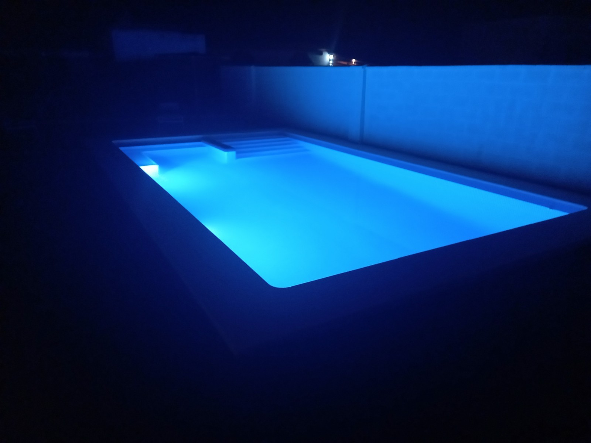
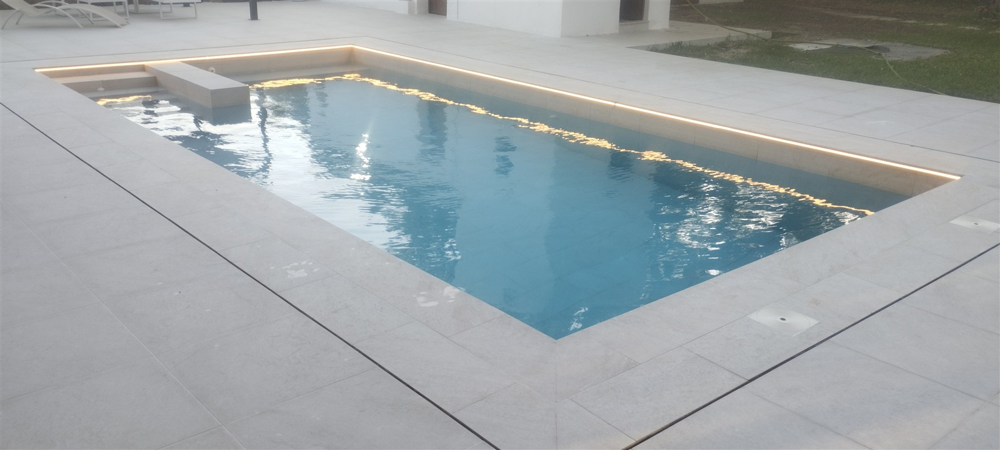
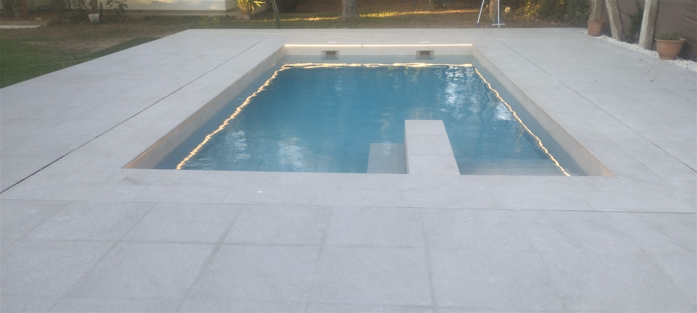
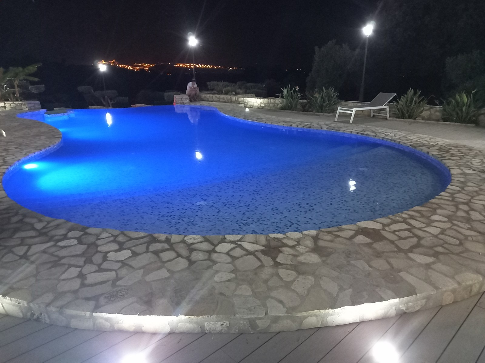
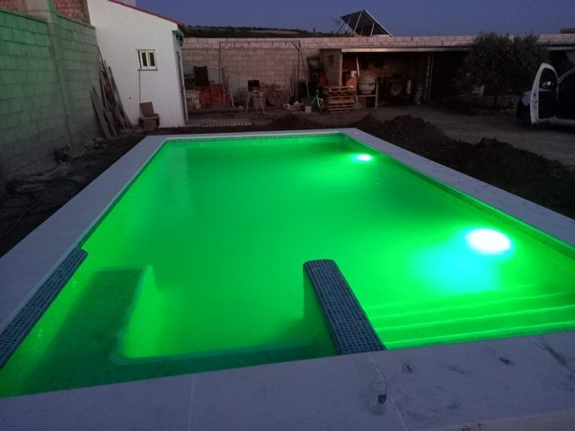

Focos LED
Iluminan el interior de la piscina y destacan el revestimiento, los escalones y las formas del vaso. Su ubicación se estudia para conseguir el ambiente deseado.
MRPOOL · EQUIPAMIENTO
La piscina también forma parte de tu jardín al caer la tarde. En MRPOOL estudiamos la iluminación en piscinas nuevas y reformas en Arcos y Cádiz, desde los focos del vaso hasta los detalles de luz perimetral.
Consultar mi iluminación ↗
LUZ QUE ACOMPAÑA AL DISEÑO
La forma del vaso, el revestimiento y la posición de los puntos de luz influyen en el resultado. Estudiamos la piscina y sus vistas desde la vivienda o la terraza para integrar la iluminación en el conjunto.
Las fotografías muestran distintos ambientes: líneas de luz cálida junto al borde, focos subacuáticos y piscinas iluminadas en color.
DISTINTAS FORMAS DE ILUMINAR
Iluminan el interior de la piscina y destacan el revestimiento, los escalones y las formas del vaso. Su ubicación se estudia para conseguir el ambiente deseado.
Permiten elegir distintos colores y crear ambientes personalizados. Según el equipo instalado, pueden ofrecer cambios de color y programas de iluminación mediante un control compatible.
Se integran junto al borde para dibujar una línea de luz que realza el contorno de la piscina. Las canaletas permiten incorporar la iluminación al acabado del conjunto.
Crea líneas luminosas de aspecto continuo que pueden acompañar contornos y detalles decorativos. Es una opción para destacar zonas de la piscina y su entorno, utilizando productos adecuados para cada ubicación.
ILUMINACIÓN PERIMETRAL
La luz recorre el contorno y dibuja la geometría del vaso. Estas dos vistas muestran la misma piscina con iluminación cálida junto al borde y su reflejo en el agua.


AMBIENTES NOCTURNOS


OBRA NUEVA Y REFORMA
En una piscina nueva, coordinamos la ubicación de los puntos de iluminación y sus canalizaciones con la construcción. En una reforma, revisamos los elementos existentes para valorar las posibilidades de renovación.
Para sustituir un foco hay que comprobar la compatibilidad con su alojamiento, la alimentación y el sistema de control. El equipo concreto se elige tras revisar la instalación.
PREGUNTAS HABITUALES
Se puede estudiar tras revisar los focos, sus alojamientos, las canalizaciones y la alimentación. La adaptación depende de cada instalación.
La cantidad y la posición se valoran según las dimensiones, la forma, el revestimiento y el efecto que se busca.
Existen distintas opciones. Las funciones disponibles y el sistema de control dependen de los equipos y de su compatibilidad con la instalación.
La localidad, las medidas aproximadas y fotografías de la piscina. Si se trata de una renovación, incluye imágenes de los focos y de los datos del equipo actual.
ARCOS · CÁDIZ
Cuéntanos cómo es tu piscina y qué ambiente buscas. Envíanos fotografías para valorar la iluminación dentro de tu proyecto de construcción o reforma.
Consultar por WhatsApp ↗Depuración de piscinas ↗